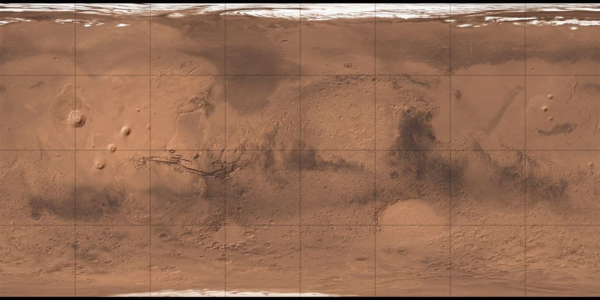
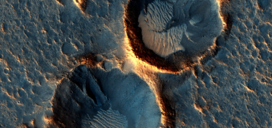

Mars map


Acidalia Plantia
Acidalia Planitia is a plain on Mars, between the Tharsis volcanic province and Arabia Terra to the north of Valles Marineris, centered at 49.8°N 339.3°E. Most of this region is found in the Mare Acidalium quadrangle, but a small part is in the Ismenius Lacus quadrangle.